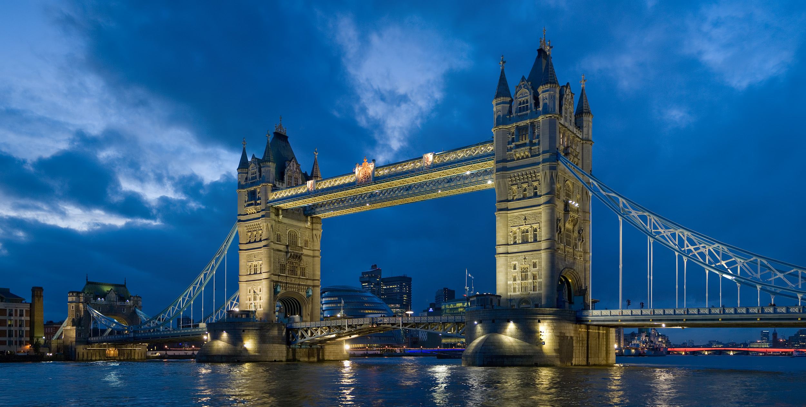
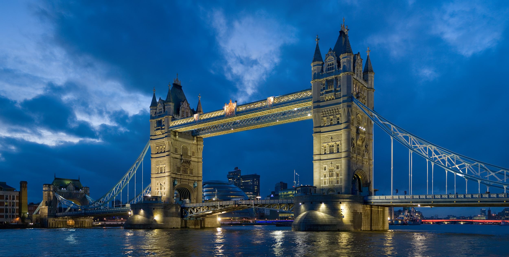

觀光
選擇在英國觀光及度假的起點不是一件易事。太多的選擇令你無法想像，可以進行及參與的活動。節日及狂歡節是不錯的開始。在英國，幾乎所有事物都能成為節日的主題，因此，全年每週你都將看到熱鬧的街頭派對、盛大的食品博覽會或樸實的鄉村節日。在英國，人們喜愛『參與及迎接挑戰』，在極其愉快的參與活動中—你也將感受到箇中的樂趣。何不參加有趣的導覽步行，發掘從景色優美的沿海景觀及天然小徑到有趣的城市漫步及地下隧道等不同體驗。以獵鷹馴練術、田野運動、超越障礙比賽及飛靶射擊為特色的市集在鄉郊地區很常見，令你愉快地感受到鄉郊體育及傳統。在大城市以外，你亦將頻繁看到航空展覽，尤其以夏季為多。此外，蒸汽列車、船隻等為主題的運輸展覽通常安排有互動環節，規模龐大。英國建有很多冒險主題公園、動物園及野生動物園，你家人的玩樂欲望將被完全激發。
節慶-復活節
耶穌受難後復活的復活節當然在英國是一個重要的節日。按照西方基督教會的傳統，通常這個日子是在3月21日到4月25日之間。復活節確實是3月21日或以後的第一個月圓日之後的星期日。除了教會的慶典之外，英國有不同的活動或風俗，標記這個日子，其中，"蛋"是經常出現的。對小孩子來說，當然是所謂的"復活蛋"。這些一般都是巧克力製造的。比較簡單的，在超級市場也可以買到，但是，在英國，不少高檔的餐廳、咖啡廳，都會在每年這個時候推出自己特製的"復活蛋"，有 黑巧克力製造的，有牛奶巧克力的，有白巧克力的，也有蛋白杏仁糖製造的。除了一般的蛋型設計外，也有不少是動物、鮮花、卡通人物等，款式繁多，就算是對吃"復活蛋"沒有興趣的也會在這個時候可以到這些餐廳、店鋪外的櫥窗一飽眼福。除了吃"復活蛋"以外，英國不少地方每年復活節左右都有有關"蛋"的活動，例如：英國的一些慈善組織和旅遊機構都會在這個時候在一些著名的花園或大宅的園圃內舉辦尋"復活蛋"的活動。最有趣的莫如一些地方在山坡上舉行的"滾蛋"比賽。參賽者自備生雞蛋，到山頂上把雞蛋滾到山下，大家都會各出奇謀，希望取勝。
各地風景圖

 
